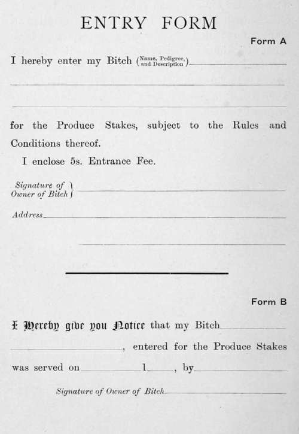
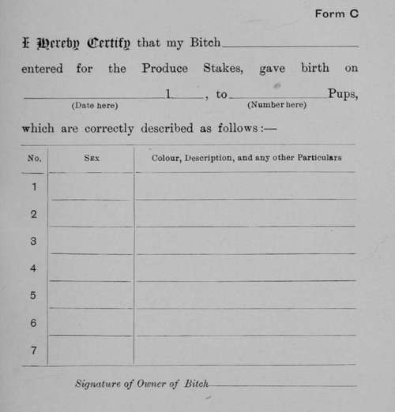

Standard Of Points Of The Dandie Dinmont Terrier. Continued
Description
This section is from the book "Sporting Dogs. Their Points And Management In Health, And Disease", by Frank Townend Barton. Also available from Amazon: Sporting Dogs; Their Points and Management in Health and Disease.
Standard Of Points Of The Dandie Dinmont Terrier. Continued
Size
The height should be from 8 to 11 inches at the top of shoulder. Length from top of shoulder to root of tail should not be more than twice the dog's height, but preferably, 1 or 2 inches less.
Weight
From 14 lbs. to 24 lbs.; the best weight as near 18 lbs. as possible. These weights are for dogs in good working condition.
The relative value of several Points in the Standard are apportioned as follows :—
Head | 10 |
Eyes | 10 |
Ears | 10 |
Neck | 5 |
Body | 20 |
Tail | 5 |
Legs and feet | 10 |
Coat | 15 |
colour | 5 |
Size and Weight | 5 |
5 | |
100 |
Rules For Breeders' Challenge Cup
1. These shall be four breeders' Challenge Cups —one for Pepper Dogs, one for Pepper Bitches, one for Mustard Dogs, one for Mustard Bitches—to be competed for at shows to be decided upon by the Committee of The Dandie-Dinmont Terrier Club: but they shall not be offered at any show where the competition is not open to all the Members.
2. No dog or bitch whelped prior to 1st Jan. 1902 shall be eligible to compete for the Cups.
3. Every dog or bitch competing for one of the Cups must be bred by a Member (who is a Member at the time the dog is whelped) of The Dandie-Dinmont Terrier Club, and must at the time of competition be the bona fide property of a Member of The Dandie-Dinmont Terrier Club, and the Cup or Cups shall be awarded to the breeder, who need not necessarily be the owner.
4. No dog or bitch shall be eligible to win a cup more than once.
5. Each cup must be won five times by the same Member before becoming his or her property.
6. A medal shall be presented in commemoration of each win.
7. Winners for the time being shall have the custody of the cup or cups, subject to the conditions to be fixed by the Committee of The Dandie-Dinmont Terrier Club.
Rules For The Tiddeman Trophies
1. The two Shields subscribed for in memory of the Rev. E. S. Tiddeman, the late President of the Club, shall be called the "Tiddeman Trophies." In the competitions one Shield shall be for the best dog and the other for the best bitch in the Dandie classes.
2. The Trophies shall be competed for as Perpetual Challenge Shields, and shall be confined to Members of the Club. The name of every winning dog or bitch and its exhibitor shall be inscribed on the Shield, together with the particulars of the win, at the expense of The Dandie-Dinmont Terrier Club.
3. The Trophies shall be competed for once in every year at a show to be decided on by the Committee of The Dandie-Dinmont Terrier Club.
4. The Trophies may be won any number of times by the same dog or bitch.
5. A medal shall be presented in commemoration of each win.
6. The winners for the time being shall have the custody of the Trophies subject to the conditions fixed by the Committee of The Dandie-Dinmont Terrier Club.
7. All other matters affecting the Trophies shall be adjudicated on by the Committee of The Dandie-Dinmont Terrier Club, whose decision shall be final.
Rules For The Ringwood, Club, Langley, And Boughton Breeders' Cups
Presented by Mrs Grieve, The Club, Messrs W. Goodall-Copestake and T. B. Potterton for Pepper Dogs and Bitches and Mustard Dogs and Bitches.
1. The above Cups are for dogs and bitches under two years of age, open to Members of The Dandie-Dinmont Terrier Club only.
2. The Cups to be competed for by dogs and bitches who in competition in their particular class have secured not less than a third prize, and who have been bred by Members of The Dandie-Dinmont Terrier Club, i.e., Members of the Club at the time of dog's birth.
3. The Cups to be won three times before becoming the property of the breeder.
4. No breeder to be permitted to win a Cup more than once with the same dog or bitch.
5. The Cups not to be offered more than once a year, and at a show to be named by the Committee.
6. All points not provided for in the foregoing conditions to be settled by the Committee.
Rules For The Pickle Cups
1. The two Cups presented by Mr W. H. A. Jacobson shall be called the " Pickle Cups." In the competitions, one Cup shall be for the best Pepper Dog, the other for the best Pepper Bitch.
2. The Cups shall be competed for as Perpetual Challenge Cups, and shall be confined to Members of the Club. The name of every winning dog or bitch and its exhibitor shall be inscribed on the Cups, together with the particulars of the win, at the expense of The Dandie-Dinmont Terrier Club.
3. The Cups shall be competed for once in every year at a show to be decided on by the Committee of The Dandie-Dinmont Terrier Club.
4. The Cups may be won any number of times by the same dog or bitch.
5. A medal shall be presented in commemoration of each win.
6. The winners for the time being shall have the custody of the Cups subject to the conditions fixed by the Committee of The Dandie-Dinmont Terrier Club.
7. All other matters affecting the Cups shall be adjudicated on by the Committee of The Dandie-Dinmont Terrier Club, whose decisions shall be final.
Rules for Open Produce Stakes of £1 each, Dandie-Dinmont Terrier Brood Bitches to be entered and their produce to be shown as explained below. (5s. forfeit to the fund).
Entries close each year on 31st January.
The show will extend to all produce of the entered Bitches that shall be born between 1st January and 31st December in the year of entry, and will take place at such time as the Committee of The Dandie-Dinmont Terrier Club shall decide. The Puppies will be shown under the Kennel Club Rules and the following special.
Conditions And Rules
1. Any number of Brood Bitches, the property of the same owner, may be entered for the Stake.
2. Bitches shall only be eligible for entry in respect to Produce to be born on or after 1st January. Entries may be made at any time before the closing of the Stake on 31st January, but Bitches must be entered before their Produce is born.
3. One entry shall only cover one litter of Puppies, but Bitches once entered may be re-entered at any time after the date of closing, if it is intended to breed another litter from them for competition.
4. A Notification of Service (Form B)must be made by the owner of each Bitch entered for the Stake. In the case of Bitches which have been served before the time of entry, this notification must accompany such entry ; and in the case of Bitches which have not been served before the time of entry, this notification must be sent to the Hon. Sec. within one calendar month after the time such Bitch shall have been served.
5. Within one calendar month from the Birth of the Puppies of any Bitch entered for the Stake, the owner shall forward to the Hon. Sec. a Certificate (Form C), signed by himself, stating the date of birth, with sex and colour of each Puppy.
6. Five shillings to be paid on entering each Bitch —the only liability in case of forfeit—the remaining fifteen shillings to become due and to be paid if and when the owner accepts for one or more of the Puppies for the Stake, on or before the date which will be appointed for that purpose and duly announced.
7. Any number of Puppies of one litter are eligible to compete under one subscription, provided that, if the breeder shall have sold or otherwise parted from any such Puppy or Puppies, no other person may accept for them or for any of them for the Stake, unless he also pay £1 for such acceptance, and forward to the Hon. Sec. a Certificate from the late owner, properly identifying the Puppy or Puppies in question.
8. Notice for accepting for the Puppies for competition will be sent at the proper times to all who have entered Bitches, and when the acceptances have come in, the Committee of the Dandie-Dinmont Terrier Club will decide the number and proportion of the prize into which the Stakes will be divided.
9. If a Bitch entered for a Stake be sold or otherwise parted with before her Puppies are born, the new owner shall forward to the Hon. Sec. a Certificate of the fact, signed by the late owner, and shall in all other respects comply with the Rules hereinbefore set out.
10. If any Judge appointed shall have made any entry for this Stake, he shall have his subscription in respect of such entry returned to him.
11. Any one failing to comply with the above Rules respecting Certificates shall be refused permission to accept for the litter in respect of which a breach of Rules has been committed, and shall in such case forfeit his entrance fee, 5s.
12. All matters of doubt or dispute arising under these Rules and Conditions, or otherwise respecting the Stake, shall be settled by the Committee of The Dandie-Dinmont Terrier Club, and their decision shall be final.

Continue to:
- prev: Standard Of Points Of The Dandie Dinmont Terrier, As Defined And Adopted By The Dandie Dinmont Terrier Club
- Table of Contents
- next: Section G. Chapter XIV. The Afghan Greyhound